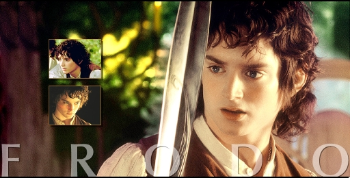
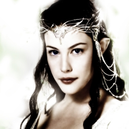

|
|
|
Gospodar prstenova počinje otprilike 60 godina nakon završetka Hobita. Prvi dio priče počinje u "Prstenovoj družini", kada Frodo Baggins, Bilbov nećak, dobiva Bilbov jedinstveni prsten. Bilbov stari prijatelj, Gandalf Sivi otkriva da je taj prsten zapravo Jedinstveni Prsten, objekt Sauronove moći, a ujedno i predmet kojeg Mračni gospodar traži većinu Trećeg doba, predmet koji iskvari srca drugih u želji da ga posjeduju i upravljaju moći koju on posjeduje.
Na Elrondovom savjetu prisustvuju predstavnici rasa Međuzemlja, Vilenjaci, Patuljci i Ljudi. Vođeni Elrondom, dolaze do zaključka da mogu spasiti Međuzemlje samo ako odnesu Prsten u zemlju sjenki, Mordor i unište ga u Kletoj gori, gdje je i iskovan.
|  |
 |